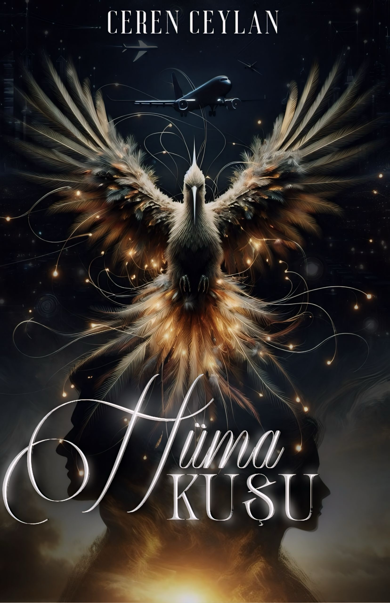

Bir zamanlar iki çocuk vardı; biri kitaplara, diğeri duvarlara sığındı. Maral, yaralarını hayallerle sararken, Alaz kara harp okulunda kendini sertleştirdi. Yolları üniversitede kesişti; Maral, Alaz'ın karanlığına ışık oldu, Alaz ise Maral'ın renklerini keşfetti. İki yıl boyunca birbirlerinin yaralarını sardılar... ta ki Alaz bir gün sessizce kaybolana kadar.
Yıllar sonra, Türkiye'nin en büyük savunma projesi Bürküt uçaklarının başmühendisi olan Maral, hayatının en büyük sınavıyla karşılaşır. Projeyi korumakla görevlendirilen özel kuvvetler timinin başında, yıllar önce ardında sorular bırakan Alaz vardır.
Maral, içindeki aşk ve kırgınlıkla yüzleşirken, Alaz'ın kayboluşunun ardındaki gerçekler birer birer ortaya çıkacaktır. Kader, ikiliyi yeniden bir araya getirirken, geçmişin yaraları ve bugünün mücadeleleri arasında hangi duygular galip gelecektir?
Bu, yarım kalmış bir aşkın ve iyileşmeye çalışan iki ruhun hikayesi... Gökyüzündeki yıldızlar kadar parlak, yeryüzündeki insanlar kadar gerçek.
Yıllar sonra, Türkiye'nin en büyük savunma projesi Bürküt uçaklarının başmühendisi olan Maral, hayatının en büyük sınavıyla karşılaşır. Projeyi korumakla görevlendirilen özel kuvvetler timinin başında, yıllar önce ardında sorular bırakan Alaz vardır.
Maral, içindeki aşk ve kırgınlıkla yüzleşirken, Alaz'ın kayboluşunun ardındaki gerçekler birer birer ortaya çıkacaktır. Kader, ikiliyi yeniden bir araya getirirken, geçmişin yaraları ve bugünün mücadeleleri arasında hangi duygular galip gelecektir?
Bu, yarım kalmış bir aşkın ve iyileşmeye çalışan iki ruhun hikayesi... Gökyüzündeki yıldızlar kadar parlak, yeryüzündeki insanlar kadar gerçek.

5 Bölüm